Alle foto's voor de Pluskozijn-pagina's
120 foto's: 97 eigen (van pluskozijn.nl) en 23 gemaakt met AI. Met een donkere rand staan ze nu op een pagina. Geef de nummers door die wel of niet mogen.
1 AI 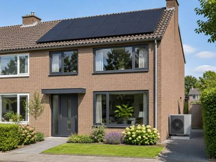
Woning met zonnepanelen en warmtepomp Staat op: algemeen, Apeldoorn, Rotterdam 2 AI 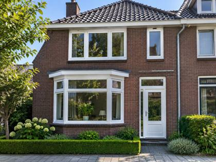
Jaren-30 woning wit Staat op: algemeen, Apeldoorn, Rotterdam 3 AI 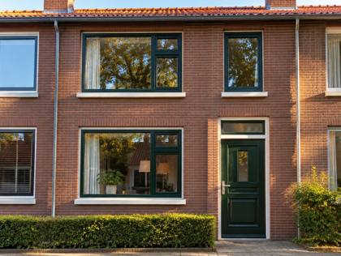
Rijtjeshuis donkergroen Staat op: algemeen, Apeldoorn, Rotterdam 4 AI 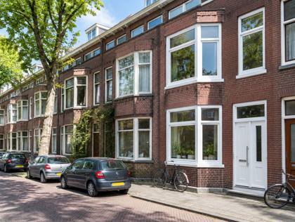
Rotterdamse straat Staat op: Rotterdam 5 AI 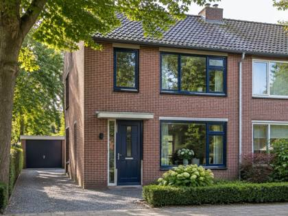
2-onder-1-kap donkerblauw Staat op: algemeen, Apeldoorn, Rotterdam 6 AI 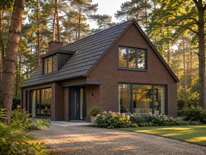
Vrijstaand aan de Veluwe Staat op: algemeen, Apeldoorn, Rotterdam 7 AI 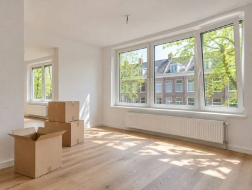
Lege woonkamer met verhuisdozen Staat op: algemeen, Apeldoorn, Rotterdam 8 AI 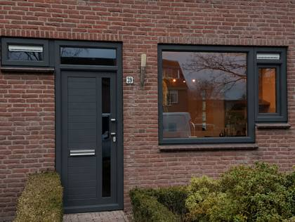
Gevel antracietgrijs (kleurkiezer, hoofdfoto) Staat op: algemeen, Apeldoorn, Rotterdam 9 AI 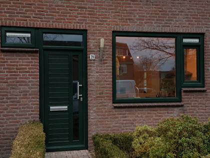
Gevel monumentengroen Staat op: algemeen, Apeldoorn, Rotterdam 10 AI 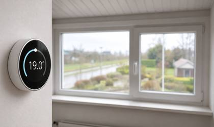
Thermostaat 19 graden Staat op: algemeen, Apeldoorn, Rotterdam 11 AI 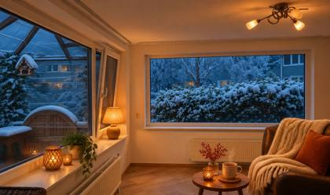
Woonkamer winter, warm binnen Staat op: algemeen, Apeldoorn, Rotterdam 12 AI 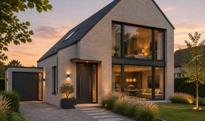
Moderne vrijstaande woning Staat op: algemeen, Apeldoorn, Rotterdam 13 AI 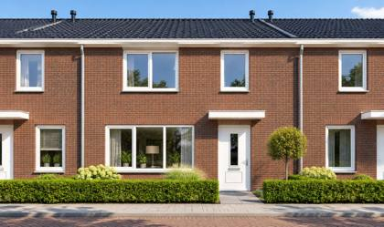
Nieuwbouw rijtjeshuis wit Staat op: algemeen, Apeldoorn, Rotterdam 14 AI 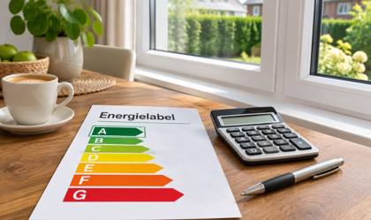
Energielabel en rekenmachine Staat op: algemeen, Apeldoorn, Rotterdam 15 AI 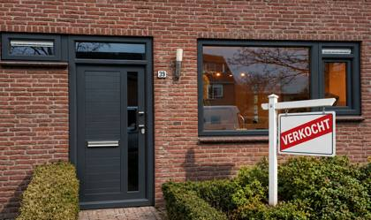
Gevel met verkocht-bord Staat op: algemeen, Apeldoorn, Rotterdam 16 Eigen 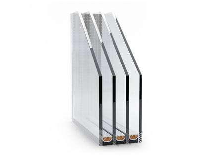
Doorsnede Vierplus-glas Staat op: algemeen, Apeldoorn, Rotterdam 17 Eigen 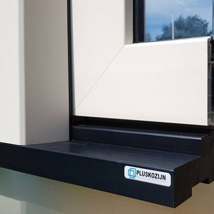
Hoek kozijn met onderdorpel Staat op: algemeen, Apeldoorn, Rotterdam 18 Eigen 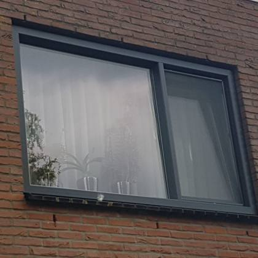
g antraciet Staat op: algemeen, Apeldoorn, Rotterdam 19 Eigen 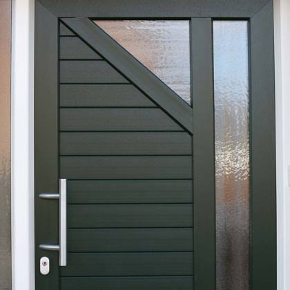
g groen Staat op: algemeen, Apeldoorn, Rotterdam 20 Eigen 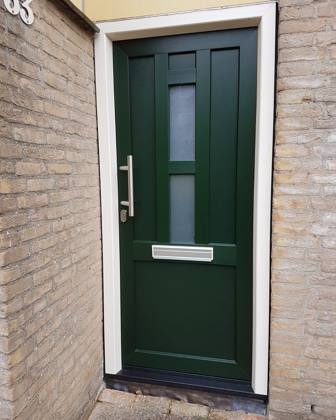
p voordeur groen Staat op: algemeen, Apeldoorn, Rotterdam 21 Eigen 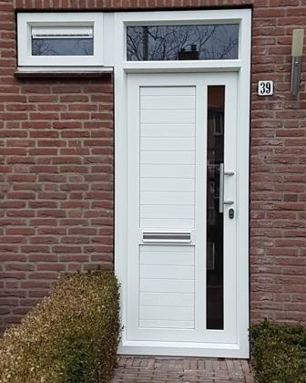
p voordeur wit Staat op: algemeen, Apeldoorn, Rotterdam 22 Eigen 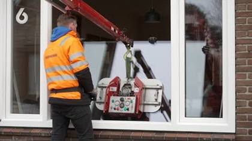
Montage (uit SBS6-video) Staat op: algemeen, Apeldoorn, Rotterdam 23 AI 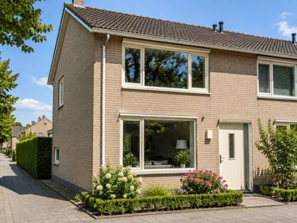
Hoekwoning crème Niet gebruikt 24 AI 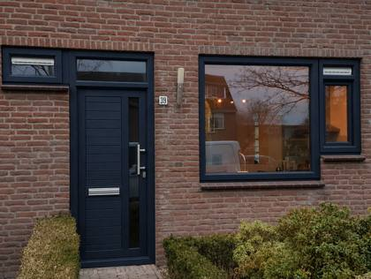
Gevel donkerblauw Niet gebruikt 25 AI 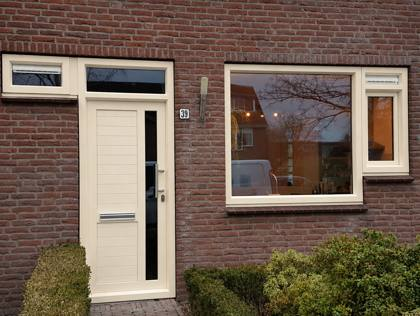
Gevel crème Niet gebruikt 26 AI 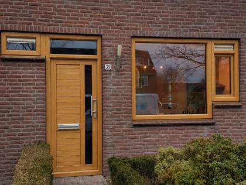
Gevel golden oak Niet gebruikt 27 AI 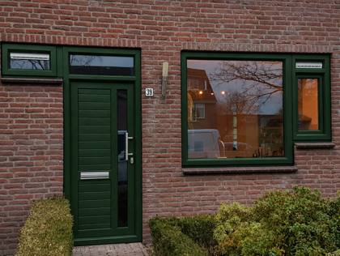
Gevel donkergroen Niet gebruikt 28 AI 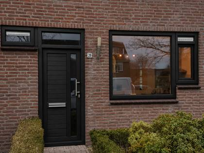
Gevel zwart Niet gebruikt 29 AI 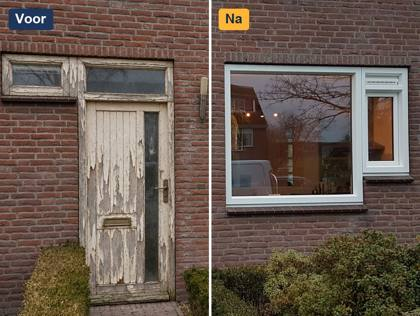
Voor/na half-half (afgekeurd) Niet gebruikt 30 AI 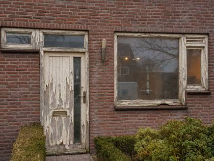
Oude houten kozijnen (afgekeurd) Niet gebruikt 31 Eigen 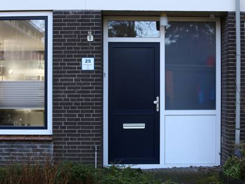
d erwin Niet gebruikt 32 Eigen 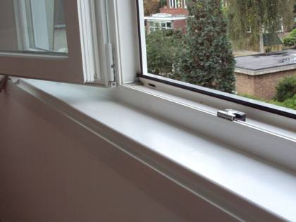
d fabriek Niet gebruikt 33 Eigen 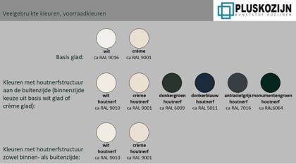
d kleuren Niet gebruikt 34 Eigen 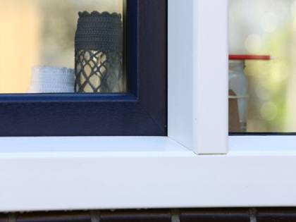
d profiel Niet gebruikt 35 Eigen 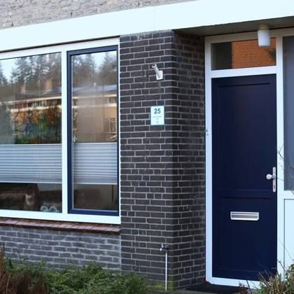
g blauw Niet gebruikt 36 Eigen 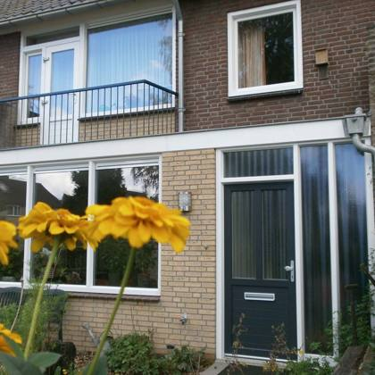
g gevel Niet gebruikt 37 Eigen 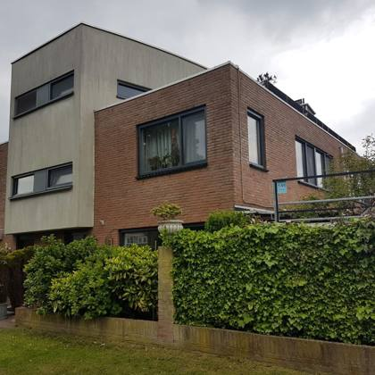
g modern Niet gebruikt 38 Eigen 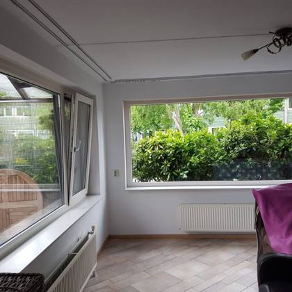
g woonkamer Niet gebruikt 39 Eigen 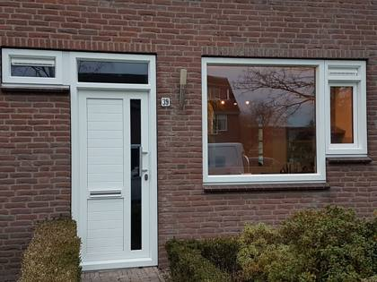
Gevel wit (echte foto, basis kleurkiezer) Niet gebruikt 40 Eigen 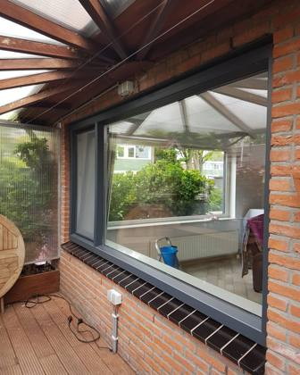
p antr portret Niet gebruikt 41 Eigen 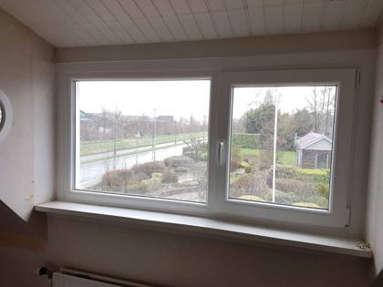
p binnen Niet gebruikt 42 Eigen 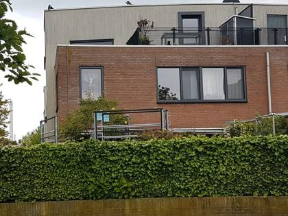
p boven beneden Niet gebruikt 43 Eigen p bovenverd Niet gebruikt 44 Eigen p dakkapel montage Niet gebruikt 45 Eigen p dakkapel Niet gebruikt 46 Eigen 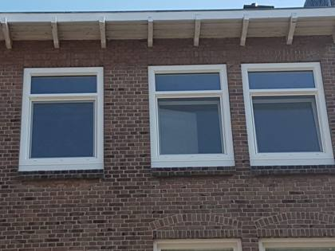
p denhaag Niet gebruikt 47 Eigen 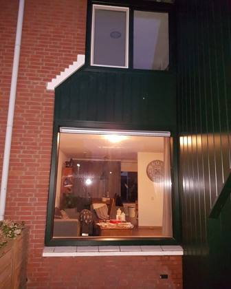
p groen avond Niet gebruikt 48 Eigen 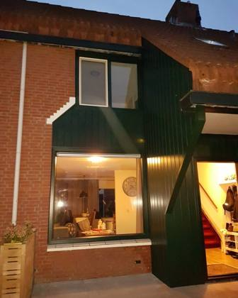
p groengevel Niet gebruikt 49 Eigen 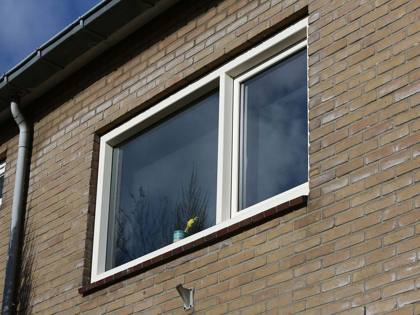
p montage Niet gebruikt 50 Eigen 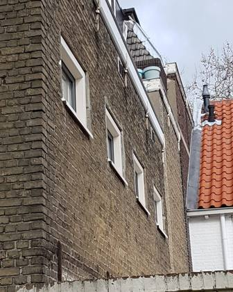
p oudgevel Niet gebruikt 51 Eigen p raamdorpel Niet gebruikt 52 Eigen 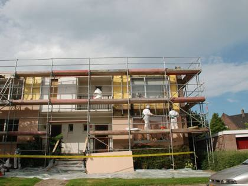
p steiger Niet gebruikt 53 Eigen 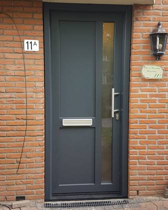
p voordeur antr Niet gebruikt 54 Eigen 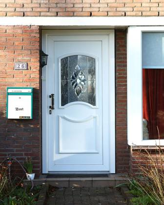
p voordeur blauw Niet gebruikt 55 Eigen p wit gevel Niet gebruikt 56 Eigen DSC00995 Niet gebruikt 57 Eigen erwin-2018-055 Niet gebruikt 58 Eigen erwin-2018-065-final-a-1024x683 Niet gebruikt 59 Eigen Pluskozijn kunststof kozijnen woonhuis kl Niet gebruikt 60 Eigen antraciet kunststof kozijn met inzethor Niet gebruikt 61 Eigen binnenkant kunststof kozijn met draaikiepraam Niet gebruikt 62 Eigen bovenverdieping kunststof kozijnen Niet gebruikt 63 Eigen dakkapel kunststof kozijnen Niet gebruikt 64 Eigen inbouw rolluik op kunststof kozijn Niet gebruikt 65 Eigen kunststof kozijn dakkapel Niet gebruikt 66 Eigen kunststof kozijn draaikiepraam montage Niet gebruikt 67 Eigen kunststof kozijn draaikiepraam ventilatierooster Niet gebruikt 68 Eigen kunststof kozijn gemonteerd dakkapel binnenkant foto Niet gebruikt 69 Eigen kunststof kozijn keralit schroten borstwering Niet gebruikt 70 Eigen kunststof kozijn met inzethor Niet gebruikt 71 Eigen kunststof kozijn met inzethorkopie1 Niet gebruikt 72 Eigen kunststof kozijn met keralit gevelbekleding Niet gebruikt 73 Eigen kunststof kozijn met melkmeisje en ventilatierooster Niet gebruikt 74 Eigen kunststof kozijn met vliegenhor Niet gebruikt 75 Eigen kunststof kozijn onderdorpel raamdorpelstenen Niet gebruikt 76 Eigen kunststof kozijn raam voorzet rolluik Niet gebruikt 77 Eigen kunststof kozijn raamdorpelstenen inzethor Niet gebruikt 78 Eigen kunststof kozijn verdiept profiel vast glas Niet gebruikt 79 Eigen kunststof kozijnen antraciet grijs Niet gebruikt 80 Eigen kunststof kozijnen blokwoning Niet gebruikt 81 Eigen kunststof kozijnen boven en beneden Niet gebruikt 82 Eigen kunststof kozijnen dakkapel montage Niet gebruikt 83 Eigen kunststof kozijnen den haag met inzethorren Niet gebruikt 84 Eigen kunststof kozijnen draaikiepramen binnenzijde Niet gebruikt 85 Eigen kunststof kozijnen keralit Niet gebruikt 86 Eigen kunststof kozijnen met voordeur Niet gebruikt 87 Eigen kunststof kozijnen vlak profiel met voordeur Niet gebruikt 88 Eigen kunststof voordeur met keralit panelen Niet gebruikt 89 Eigen kunststof voordeur siergreep Niet gebruikt 90 Eigen kunststof voordeur zwarte onderdorpel Niet gebruikt 91 Eigen voorgevel kunststof kozijnen Niet gebruikt 92 Eigen voorgevel kunststof kozijnen wit Niet gebruikt 93 Eigen woonkamer grote kunststof kozijnen Niet gebruikt 94 Eigen antraciet kunststof kozijn Niet gebruikt 95 Eigen binnenkant kunststof deur Niet gebruikt 96 Eigen deur rechte siergreep met rozette Niet gebruikt 97 Eigen keralit gevel bekleding Niet gebruikt 98 Eigen kunststof antraciet keukendeur Niet gebruikt 99 Eigen kunststof antrciet deur dagkant negge bekleding Niet gebruikt 100 Eigen kunststof deur keralit gevelbekleding Niet gebruikt 101 Eigen kunststof keralit schroten grijs Niet gebruikt 102 Eigen kunststof kozijn blauw inbouwrolluik Niet gebruikt 103 Eigen kunststof kozijn met Raamdorpelstenen pluskozijn Niet gebruikt 104 Eigen kunststof kozijnen in oude stenen gevel Niet gebruikt 105 Eigen kunststof kozijnen klein Niet gebruikt 106 Eigen kunststof kozijnen met groene gevelbekleding keralit Niet gebruikt 107 Eigen kunststof kozijnen met raamdorpelstenen Niet gebruikt 108 Eigen kunststof kozijnen oude gevel Niet gebruikt 109 Eigen kunststof kozijnen vlak profiel Niet gebruikt 110 Eigen kunststof schroten keralit Niet gebruikt 111 Eigen kunststof voordeur Niet gebruikt 112 Eigen kunststof voordeur Niet gebruikt 113 Eigen kunststof voordeur binnenkant afwerking aftimmering Niet gebruikt 114 Eigen kunststof voordeur matglas brievenbus Niet gebruikt 115 Eigen kunststof voordeur met boven zijlicht Niet gebruikt 116 Eigen kunststof voordeur schuine indeling Niet gebruikt 117 Eigen kunststof wc raampje ventilatierooster Niet gebruikt 118 Eigen pluskozijn kunststof voordeur Niet gebruikt 119 Eigen voorgevel kunststof kozijnen keralit Niet gebruikt 120 Eigen woningstichting Niet gebruikt